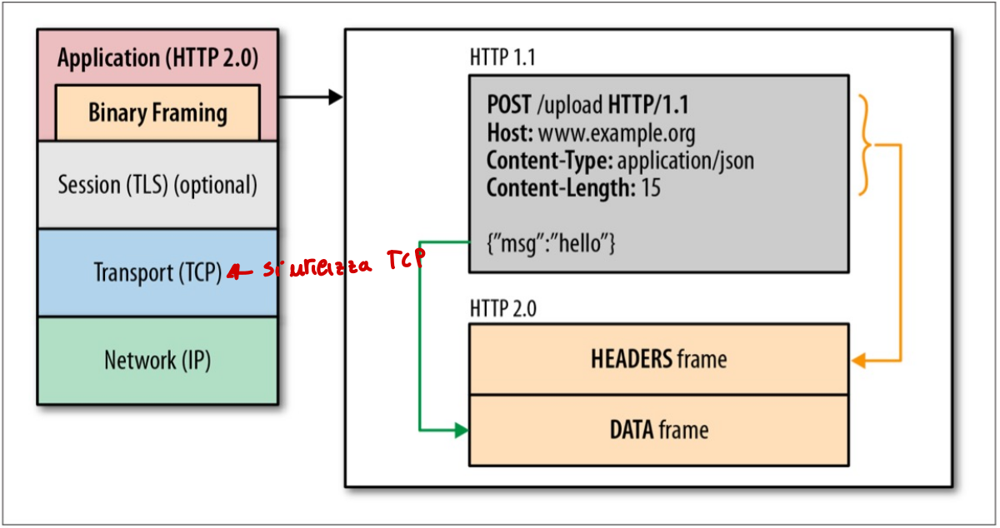
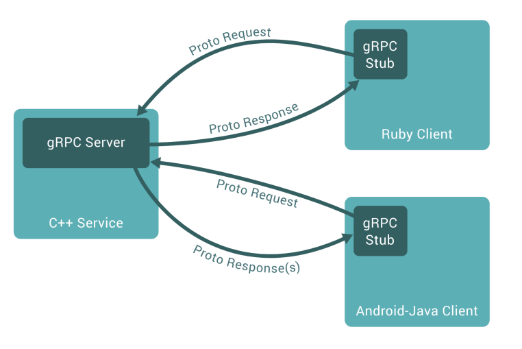
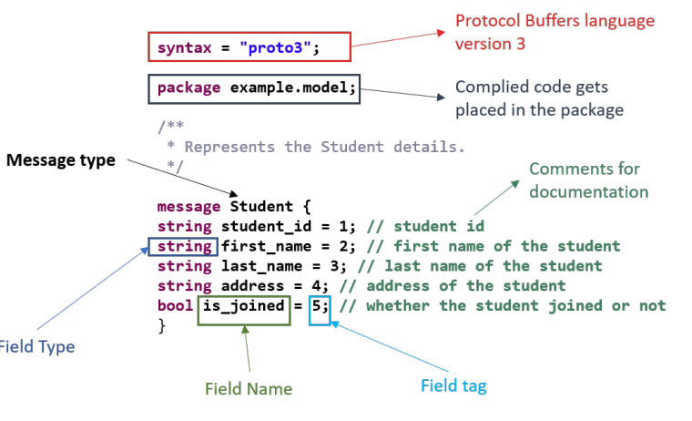
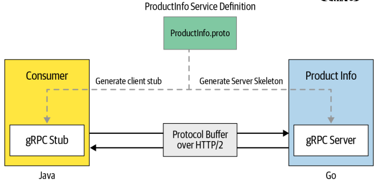
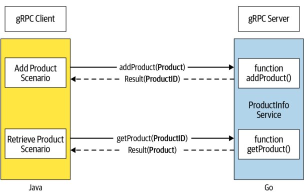

Sistemi Middleware
Cos’è un middleware
Il middleware è uno strato software interposto tra il sistema operativo e le applicazioni capace di fornire astrazioni e servizi utili per lo sviluppo di applicazioni distribuite. In altre parole, si posiziona “nel mezzo” tra l’hardware/OS e il software applicativo, e il suo scopo principale è mascherare la complessità e l’eterogeneità dei sistemi distribuiti.
Per questo motivo viene chiamato anche “glue technology” (tecnologia collante), perché permette a componenti sviluppati in momenti diversi, con linguaggi diversi e su piattaforme diverse, di comunicare tra loro.
Sistema distribuito
Alcune definizioni da i pionieri dei sistemi distribuiti sono:
-
“Un sistema distribuito è un sistema i cui componenti, localizzati in computer connessi in rete, comunicano e coordinano le loro azioni solo attraverso scambio di messaggi” - G. Coulouris et al.
-
“Il mio programma gira su un sistema distribuito quando non funziona per colpa di una macchina di cui non ho mai sentito parlare” - L. Lamport
Sono presenti delle implicazioni (conseguenze dirette) da tenere in considerazione che rendono i sistemi distribuiti intrinsecamente complessi rispetto a quelli centralizzati:
-
Elaborazione concorrente:
Nei sistemi distribuiti più componenti su macchine diverse eseguono operazioni contemporaneamente. Questo significa che non c’è un unico flusso di esecuzione sequenziale, ma tanti flussi paralleli che devono coordinarsi.
I problemi che ne derivano sono molteplici:
-
gestione della concorrenza nell’accesso alle risorse condivise (come i database)
-
necessità di meccanismi di sincronizzazione tra processi remoti
-
rischio di situazioni di stallo (deadlock) distribuite, molto più difficili da rilevare e risolvere rispetto al caso locale
In middleware cerca di alleviare questo problema fornendo primitive di coordinamento ad alto livello, come le transazioni distribuite.
-
-
Assenza di clock globale:
In un sistema centralizzato esiste un unico orologio di sistema che permette di stabilire con precisione l’ordine temporale degli eventi. In un sistema distribuito, ogni macchina ha il proprio orologio locale, e questi orologi non sono mai perfettamente sincronizzati tra loro, per via dei ritardi di rete e della deriva degli orologi fisici.
Questo crea un problema fondamentale: è impossibile dire con certezza assoluta quale evento tra due eventi avvenuti su macchine diverse si è verificato per primo.
-
Malfunzionamenti indipendenti:
In un sistema centralizzato il guasto è generalmente totale: il sistema funziona o non funziona. In un sistema distribuito invece i guasti sono parziali e indipendenti. Un singolo nodo può crashare, un link di rete può interrompersi, un messaggio può andare perso, tutto questo mentre il resto del sistema continua a funzionare.
Questo crea scenari molto insidiosi: messaggio potrebbe essere stato ricevuto o meno prima del chash del destinatario, e un’operazione potrebbe essere stata eseguita parzialmente.
I middleware nascono proprio per nascondere queste complessità, permettendo di ragionare sul sistema distribuito in modo simile a come ragioneremmo su un sistema centralizzato.
Heterogeneous distributed computing
I sistemi distribuiti sono in generale eterogenei.
L’eterogeneità dei computer e delle tecnologie - hardware e software - è da considerarsi la norma, non l’eccezione, anche all’interno di una stessa grande azienda od organizzazione, pubblica o privata.
Per eterogeneità intendiamo la natura dei sistemi che riguarda tutto lo stack hardware-software.
Il paradigma di elaborazione più generale prevede componenti interoperanti in ambiente distribuito eterogeneo. Questo paradigma (modello di riferimento) e chiamato Heterogeneous distributed computing.
Eterogeneità
In ambiente distribuito vari fattori aumentano la complessità dello sviluppo di software di qualità:
-
le applicazioni sono distribuite su una rete di calcolatori, di caratteristiche differenti (mainframes, servers, workstations, personal computers) e dotati di hardware e di sistemi operativi diversi e spesso incompatibili.
-
occorre adoperare linguaggi di programmazione diversi:
- linguaggio di alto livello, come
C#oJava, per lo sviluppo rapido della parte di presentazione di un’applicazione (la cosidetta presentation logic) e per le funzionalità di un’applicazione (business logic). - linguaggi tradizionali come
COBOL,C,C++per funzionalità legacy o di basso livello (che richiedono maggior interazione con il OS). - linguaggi di scripting, come
python,php,jsp,asp.net, per lo sviluppo di funzionalità server-side.
- linguaggio di alto livello, come
-
i dati sono distribuiti su più nodi di elaborazione, memorizzati in archivi o con sistemi di gestione di basi di dati (DBMS) diversi, e in generale condivisi da applicazioni locali e remote.
-
nello sviluppo di sfotware su rete - anche in ambiente omogeneo - occorre fronteggiare problematiche di:
- sicurezza,
- guasti,
- contesa e condivisione di risorse,
che si presentano ben più complessi che per i sistemi centralizzati; l’eterogeneità aggiunge ulteriore complessità a questi stessi problemi.
Enterprise Application Integration (EAI)
Sistemi complessi funzionanti raramente vengono sviluppati integralmente ex novo.
- Tipicamente essi evolvono a partire da sistemi esistenti già funzionanti.
L’integrazione di sistemi informativi sviluppati in momenti, con linguaggi e con tecniche diversi, ed operanti su piattaforme eterogenee, è un problema centrale delle tecnologie software.
L’integrazione consiste nel far comunicare e collaborare sistemi informativi che sono stati sviluppati in momenti diversi, con linguaggi diversi, con tecniche diverse, e che operano su piattaforme eterogenee.
In pratica si richiede sempre più di fare due cose. La prima è utilizzare applicazioni di terze parti, chiamate sistemi COTS che stanno per Commercial Off-The-Shelf, ovvero software commerciale già pronto che si comporta e si integra nel proprio sistema, come ad esempio un sistema ERP o un software di gestione delle risorse umane.
La seconda è riutilizzare applicazioni esistenti chiamate sistemi legacy, ovvero quei vecchi sistemi ereditati dal passato che continuano a funzionare e che nessuno vuole o può riscrivere da zero.
L’integrazione di applicazioni, siano esse sistemi di nuovo sviluppo, sistemi ereditati o sistemi COTS, è da considerarsi lo scenario tipico di sviluppo software su larga scala.

Per far comunicare quindi tutti questi sistemi eterogenei di una applicazione distribuita è indispensabile l’utilizzo di un middleware.
L’integrazione di applicazioni (EAI) è un processo sovente più complesso dello sviluppo ex novo

È un risultato controintuitivo: integrare è spesso più difficile che sviluppare da zero.
Quando si sviluppa da zero si ha la libertà di scegliere le tecnologie e i prodotti più adatti, si richiede competenze classiche di analisi, progettazione e programmazione, e il lavoro può essere svolto anche da giovani sviluppatori.
Quando invece si integra, si hanno vincoli pesanti su sistemi operativi, protocolli, linguaggi e ambienti di sviluppo, perché bisogna fare i conti con quello che già esiste. Si richiedono competenze molto più specializzate come la conoscenza delle architetture software, la capacità di reingegnerizzare sistemi esistenti, la progettazione attenta delle interfacce tra componenti e la predisposizione all’evoluzione futura. Infine richiede familiarità con i sistemi esistenti e viene svolto da specialisti con anni di esperienza, non da sviluppatori junior.
In questa prospettiva dello sviluppo software, la programmazione (intesa come codifica di moduli software in un linguaggio di programmazione) è sempre meno una fase critica del ciclo di vita del software, in termini sia di risorse sia di competenze tecnologiche richieste.
Poiché nell’EAI il problema principale non è scrivere codice nuovo, ma far comunicare sistemi che già esistono. Questo sposta il peso del lavoro dalla fase di programmazione ad altre fasi.
Quindi assume maggiore importanza la capacità di adattare componenti esistenti e non originariamente pensati per interoperare, mediante l’attenta progettazione delle interfacce.
Le tecnologie middleware sono nate con il preciso obiettivo di fornire una risposta al problema dell’EAI.
Middleware
Con il termine middleware si intende uno strato software interposto tra il sistema operativo e le applicazioni, in grado di fornire le astrazioni ed i servizi per lo sviluppo di applicazioni distribuite.

- Quando due componenti di un sistema distribuito devono comunicare tra loro, ci sono tre cose su cui devono necessariamente accordarsi in anticipo, altrimenti la comunicazione non può funzionare:
-
Servizio e interfacce:
Prima che i due componenti possano comunicare, devono sapere cosa offre l’uno all’altro e come chiederlo. È come un contratto: il componente che offre un servizio deve dichiarare cosa sa fare e come lo si può invocare.
Si parla di IDL (Inteface Definition Language).
-
Posizione:
Un componente deve sapere dove si trova fisicamente il componente con cui vuole comunicare nella rete.
-
Rappresentazione dei dati:
Quando due macchine diverse si scambiano dati, devono parlare lo stesso “linguaggio” per i dati.
-
Lo strato middleware offre ai programmatori di applicazioni distribuite librerie di funzioni, o middleware API (Application Programming Interface), in grado di mascherare l’eterogeneità dei sistemi su rete.
Le piattaforme middleware vengono anche definite software di connettività tra applicazioni, o anche “glue technologies”, evidenziando la loro caratteristica di tecnologie di integrazione di applicazioni.
Proprietà del livello middleware
Un middleware può mascherare le eterogeneità mediante meccanismi di:
-
Trasparenza del sistema operativo:
Operando al di sopra del sistema operativo, i servizi forniti dalle API middleware possono essere definiti in maniera indipendente da esso, consentendo la portabilità delle applicazioni tra diversi OS.
-
Trasparenza del linguaggio di programmazione:
La comunicazione tra componenti sviluppati in linguaggi fa sorgere immediatamente due categorie di problematiche:
- Il primo problema riguarda le differenze tra i tipi di dato. Ogni linguaggio di programmazione ha il proprio sistema di tipi. Un intero in
Cnon è necessariamente uguale a un intero inJava; - il secondo problema riguarda la diversità nei meccanismi di scambio dei parametri. Quando un programma chiama una funzione o una procedura, i parametri vengono passati in modi diversi a seconda del linguaggio. Alcuni linguaggi passano i parametri per valore, altri per riferimento, altri ancora hanno convenzioni ibride.
Il livello middleware può consentire l’interoperabilità in due modi strettamente collegati:
- il primo modo è definire un sistema di tipi intermedio. Il middleware introduce un insieme di tipi di dato neutrali, indipendentemente da qualsiasi linguaggio specifico. Ogni linguaggio partecipante ha poi delle regole precise per tradurre i propri tipi nativi in questi tipi intermedi e viceversa;
- il secondo modo è definire regole non ambigue di corrispondenza con i tipi dei linguaggi più diffusi. Queste regole specificano esattamente come ogni tipo del sistema intermedio corrisponde ai tipi dei vari linguaggi supportati, eliminando qualsiasi ambiguità nella traduzione.
- Il primo problema riguarda le differenze tra i tipi di dato. Ogni linguaggio di programmazione ha il proprio sistema di tipi. Un intero in
-
Trasparenza alla locazione:
Le risorse (dati e servizi) dovrebbero essere accessibili a livello logico, senza conoscerne la effettiva locazione fisica. È lo strato middleware che deve farsi carico della localizzazione su rete del processo partner in una comunicazione, e del trasporto dei dati (location transparency)
-
Trasparenza della migrazione:
Dati e servizi possono venir rilocati durante il loro ciclo di vita. Se un componente migra, il middleware deve consentire l’accesso a componenti mobili sulla rete, in maniera trasparente ai moduli client (migration transparency)
Quindi il middleware deve poter gestire fallimenti nel mondo fisico e le eventuali migrazioni verso altri server.
-
Trasparenza ai guasti:
Una elaborazione distribuita può fallire anche solo in maniera parziale per guasti che si verificano nei singoli nodi o nel sottosistema di comunicazione.
Occorrono tecniche complesse per poter gestire uno stato globale consistente della computazione.
Lo stato globale consistente della computazione è l’insieme di tutte le informazioni che descrivono in un dato momento la situazione di tutti i componenti del sistema distribuito, quindi i dati presenti su ogni nodo, le operazioni in corso, i messaggi in transito nella rete. Si dice consistente quando questo stato è coerente e non contraddittorio, cioè quando tutti i componenti del sistema si trovano in una situazione che ha senso dal punto di vista logico.
Il problema è che non avendo un clock globale e i componenti sono indipendenti tra loro, quando si verifica il fallimento è molto difficile capire in quale stato si trovava ciascun componente in quell’istante.
Lo strato middleware può offrire al programmatore meccanismi ad alto livello per mascherare i guasti. Questo significa che il middleware si occupa di rilevare i guasti e di tentare il recupero quando possibile, in modo trasparente al programmatore, che non deve scrivere codice complesso per gestire ogni possibile scenario di guasto.
-
Trasparenza della resplicazione:
La replicazione di componenti è una delle tecniche più comuni per realizzare politiche di tolleranza ai guasti, ma può essere utilizzata anche per migliorare le prestazioni, attraverso un miglior bilanciamento del carico di elaborazione.
L’esistenza di più copie di un componente dovrebbe però essere trasparente ai suoi client (replication transparency).
-
Trasparenza delle implementazioni commerciali:
Alcune tecnologie di middleware non nascono come prodotti commerciali, ma come specifiche di riferimento, cioè documenti tecnici che descrivono come un certo tipo di middleware deve funzionare, quali servizi deve offrire e come deve comportarsi. Queste specifiche vengono promosse da organizzazioni di produttori, cioè gruppi di aziende che si mettono d’accordo su uno standard comune, e spesso vengono poi recepite dagli enti di standardizzazione ufficiali.
Una volta che esiste una specifica standard, le varie aziende possono sviluppare le proprie implementazioni commerciali di quel middleware, ognuna a modo suo, ma tutte rispettando lo stesso standard. Queste implementazioni quindi sono conformi allo standard ma possono differenziarsi tra loro per due motivi.
- il primo sono gli aspetti secondari, cioè dettagli implementativi che lo standard lascia liberi;
- il secondo sono i servizi aggiuntivi fuori standard, cioè funzionalità extra che una specifica implementazione offre oltre a quelle previste dallo standard.
In questo modo è resa possibile l’interoperabilità tra applicazioni basate su realizzazioni commerciali diverse dello stesso tipo di middleware, ovvero che seguono lo stesso standard di riferimento.
Modelli di tecnlogie middleware
Nell’ultimo decennio sono state realizzate numerose tipologie di piattaforme middleware, sia in forma commerciale sia in forma prototipale in ambito di ricerca.
Esistono diversi modelli di programmazione basati sui middleware, cioè diversi approcci con cui il middleware organizza e gestisce la comunicazione tra componenti in un sistema distribuito.
I principali modelli di programmazione sono:
- Chiamata di procedura remota (Remote Procedure Call, RCP)
- Scambio di messaggi (Message-Oriented Middleware, MOM)
- Transazionali (Transaction Processing, TP)
- Spazio delle tuple (Tuple Space, TS)
- Accesso remoto ai dati (Remote Data Access, RDA)
- Oggetti distribuiti (Distributed Object Middleware, DOM)
- Componenti (Component Model, CM)
- Servizi Web (Web Service, WS)
TASSONOMIA DEI SISTEMI MIDDLEWARE:

Remote Procedure Call
Il Remote Procedure Call è un paradigma di comunicazione che permette a un programma di invocare una procedura (funzione, metodo) che risiede su una macchina remota come se fosse una chiamata locale. L’obiettivo è nascondere allo sviluppatore tutta la complessità della comunicazione di rete: serializzazione dei dati, gestione del protocollo di trasporto, gestione degli errori di rete, ecc.
L’idea di fondo è che il client chiami una funzione “qualunque” senza preoccuparsi del fatto che il codice effettivo venga eseguito altrove. Per realizzare questa astrazione, RPC introduce due componenti fondamentali, generati automaticamente a tempo di compilazione:
- Stub (lato client): è un proxy della procedura remota. Espone al client la stessa interfaccia che avrebbe una funzione locale, ma internamente si occupa di impacchettare (marshalling) i parametri della chiamata, inviarli al server attraverso la rete e attendere la risposta.
- Skeleton (lato server): riceve la richiesta, effettua l’unmarshalling dei parametri, invoca la procedura reale implementata sul server e restituisce il risulato seguendo il percorso inverso.
Lo scenario d’uso tipico oggi è quello dei microservizi, dove molti piccoli servizi indipendenti - possibilmente scritti in linguaggi diversi - devono comunicare in modo efficiente con uno stile richiesta/risposta.
Proprio in questo contesto si colloga gRPC, il middleware RPC moderno (sviluppato da Google e oggi progetto CNCF): sfrutta HTTP/2 come trasporto e i Protocol Buffer come IDL e formato di serializzazione.
gRPC
grpc.io è un middleware RPC universale ad alte prestazioni e open source.
È pensato per essere multipiattafarma, ovvero permette la comunicazione tra applicazioni scritte in linguaggi di programmazione diversi.
Principiali scenari di utilizzo:
- Collegamento microservizi poliglotti che utilizzano lo stile di comunicazione richiesta/risposta.
- Connettere dispositivi mobili e browser ai servizi di backend.
- Generare librerie client efficienti.
Viene oggi giorno utilizzato da molte aziende e in molti sistemi distribuiti.
Caratteristiche principali
-
HTTP/2gRPC si appoggia su
HTTP/2, che è una versione moderna diHTTPcon vantaggi prestazionali significativi rispetto adHTTP/1.x.- Streaming bidirezionale: client e server possono inviare flussi di messaggi in entrambe le direzioni sulla stessa connessione, in modo indipendente l’uno dell’altro.
- Multiplexing: più richieste/risposte possono viaggiare in parallelo sulla stessa connessione TCP, senza il problema dell’head-of-line blocking (convoglio) tipico di
HTTP/1.1(dove le richieste su una stessa connessione devono essere servite in ordine)
L’idea chiave è trattare le RPC come riferimenti a oggetti HTTP: ogni chiamata corrisponde concettualmente a una richiesta
HTTP/2verso un endpoint specifico sul server. -
Protocol Buffer (protobuf) come IDL
I Protocol Buffer svolgono due ruoli distinti in gRPC:
- IDL: il file
.protodefinisce in modo formale e neutrale rispetto al linguaggio sia i messaggi scambiati sia i servizi (cioè le procedure remote disponibili). Da questa specifica, il compilatoreprotocgenera automaticamente stub client e classi server astratte nel linguaggio target. Questo è il meccanismo che riduce drasticamente il codice collante (comunication logic) che lo sviluppatore deve scrivere. - Formato di interscambio dei messaggi: protobuf è anche il formato binario con cui i messaggi vengono effettivamente serializzati e trasmessi sulla rete. Questo formato produce payload molto compatti rispetto, ad esempio, a
JSONoXML.
- IDL: il file
Il vantaggio aggiuntivo è la tipizzazione forte: i contratti definiti tramite protobuf prevengono errori a run-time spostandoli a compile-time. Se il client e il server fanno riferimento allo stesso .proto, è impossibili inviare messaggi malformati o con campi inattesi: il compilatore segnala l’errore prima ancora di eseguire il codice (nel caso di linguaggi tipizzati, non nel caso di python).
-
Funzionalità integrate: autenticazione, streaming bidirezionale, controllo del flusso
gRPC offre out-of-the-box una serie di funzionalità che, se si usassero socket nude, andrebbero implementate a mano:
- Autenticazione: supporto integrato per
TLS, autenticazione basata su token (es. OAuth2), credenziali per canale o per chiamata. - Streaming bidirezionale: ereditato da
HTTP/2, è esposto direttamente al programmatore come modalità di chiamata RPC. - Controllo di flusso: meccanismo che impedisce a un mittente veloce di sommergere un destinatario lento, regolando dinamicamente il ritmo di trasmissione. È particolarmente importante negli scenari di streaming, dove il volume di dati può essere elevato o prolungato nel tempo.
- Autenticazione: supporto integrato per
-
Comunicazione bloccante e non bloccante
Lo stub generato automaticamente dal compilatore è il componente che disaccoppia il codice applicativo dalla logica di rete (logica di comunicazione).
gRPCpermette di scegliere tra due modalità di chiamata:- Blocking/synchronous stub: il client invoca la procedura remota e si blocca in attesa della risposta. Quando questa arriva, lo stub la restituisce come valore di ritorno della chiamata, oppure solleva un’eccezione se qualcosa è andaro storto. Il comportamento è del tutto analogo a una chiamata di funzione locale ed è la modalità più semplice e più usata.
Ciò che permette di realizzare un’estensione ai sistemi distributi del modello procedurale dei linguaggi di programmazione tradizionali.
- Non-blocking/asynchronous stub: il client non si blocca: la chiamata ritorna immediatamente e la risposta viene gestita in modo asincrono, tipicamente attraverso una callback o un oggetto future.
È possibile ma non è la norma.
Cenni a HTTP/2
- Binary Framing Layer: le richieste/risposte di
HTTP/2sono suddivise in messaggi di piccole dimensioni e con un frame in formato binario, rendendo la trasmissione dei messaggi efficiente.

Tutto avviene all’interno di una singola connessione TCP stabilita tra client e server.
Dentro questa connessione possono esistere più stream contemporaneamente, ciascuno trasporta uno o più messagge, e ogni message è composto da uno o più frame.
-
Frame: il frame è la più piccola unità di comunicazione in
HTTP/2. È un piccolo blocco binario che contiene:- Un’intestazione (header) di frame: include almeno l’identificativo dello stream a cui il frame appartiene, più altre informazioni come il tipo di frame e la lunghezza del payload.
- Un payload: i dati veri e propri.
L’aspetto cruciale è che ogni frame dichiara esplicitamente a quale stream appartiene tramite il suo header. Questo è ciò che permette al destinatario di ricomporre i pezzi correttamente, anche quando frame di stream diversi arrivano interlacciati sulla stessa connessione.
-
Message - la richiesta o risposta logica: è la sequenza completa di frame che compongono una richiesta logica o una risposta logica dal punto di vista applicativo.
Tipicamente un message è composto da:
- Un frame HEADER (con metadati: metodo, path, status code, ecc.)
- Zero o più frame DATA (con il corpo del messaggio)
il message è quindi un’astrazione logica: il programmatore ragiona in termini di messaggi (richieste/risposte), mentre sul canale viaggiano frame.
Il message è quindi l’astrazione della sequenza di frame (ordinata)
HTTP/2che vengono effettivamente trasmessi sul canale di comunicazione e che, ricomposti, costituiscono una richiesta o una risposta logica.→ Ciò permette al programmatore di non dover preoccuparsi dei frame, ma di lavorare unicamente come messaggi completi.
-
Stream - flusso bidirezionale: è il livello più alto dei tre. È un flusso bidirezionale di byte all’interno di una connessione TCP stabilita, identificato da un ID univoco, che può trasportare uno o più message.
Le caratteristiche essenziali dello stream sono:
- Bidirezionale: client e server possono inviare message in entrambe le direzioni sullo stesso stream.
- Indipendente dagli altri stream: i message di stream diversi possono essere interlacciati liberamente sulla connessione TCP.
- Può contenere più messaggi: in
HTTP/2standard, ogni stream tipicamente contiene una richiesta + la sua risposta, in gRPC con streaming RPC, uno stream può trasportare interi flussi di messaggi in entrambe le direzioni.
-
Compressione dell’intestazione:
In
HTTP/1.xgli header vengono inviati come testo in chiaro, completamente, in ogni richiesta. Questo è un problema perché:- gli header sono spesso molto ripetitivi;
- gli header sono sproporzionalmente grandi rispetto al body;
HTTP/2introduce HPACK, un algoritmo di compressione progettato specificamente per gli headerHTTP.
gRPC Protocol Buffer
gRPC utilizza i protocol buffer (detti anche protobuf) come:
-
IDL per definire l’interfaccia del servizio
genera automatica di stub client e classi server astratte.
-
Formato di interscambio dei messaggi
i messaggi gRPC sono serializzati utilizzando i protocol buffer, avendo dei piccoli payload dei messaggi da gestire.
I protocol buffer sono basati sul solito modello Proxy-Skeleton (stub e server).

I protocol buffer sono un meccanismo open-source ormai maturo di Google per serializzare i dati strutturati.
Usano una rappresentazione binaria dei dati.
La descrizione è fortemente tipizzata.
I tipi di dato sono strutturati come messaggi:
-
Messaggio: piccolo record logico di informazioni contenente una serie di coppie nome-valore chiamate campi.
-
I campi hanno numeri univoci, utilizzati per identificare i campi nel formato binario del messaggio.
Ovvero all’interno delle varie frame che vengono trasmesse, che non sono altro che pezzi di flusso di dati binari, sono presenti gli identificativi (tag) che permettono di capire quale sia il campo a cui si riferisce il valore binario ricevuto.

-
È possibile aggiungere un identificatore di package (opzionale) a un file
.protoper evitare conflitti di nomi con i tipi di messaggi di un protocollo. -
In Python, la direttiva
packageviene ignorata, poichè i moduli python sono organizzati in base alla loro posizione nel file system.In ogni caso è forntemente raccomandato specificare il package per il file
.proto, poiché altrimenti potrebbe portare a conglitti di denominazione nei descrittori e rendere il ptoto non portabile per altri linguaggi.
ESEMPIO:
syntax="proto3";
package ecommerce;
service ProductInfo{
rpc addProduct(Product) returns (ProductID);
rpc getProduct(ProductID) returns (Product);
}
message Product {
string id = 1;
string name = 2;
string description = 3;
}
message ProductID{
string id = 1;
}
È una specifica completa, e contiene tutti gli ingredienti tipici di un .proto.
-
La direttiva
syntaxserve a dichiarare la versione del linguaggio Protocol Buffer. -
La direttiva
packagequalifica i tipi di messaggio per evitare conflitti di nomi. Serve per inserire nel punto corretto dello spazio dei nomi gli stub che il compilatore genererà automaticamente. -
Il blocco
serviceè la parte che definisce l’interfaccia del servizio remoto: quali procedure il server espone, quali tipi accettano in input e quali restituiscono in output.Il servizio
ProductInfoespone due metodi RPC:addProduct(Product) returns (ProductID)- riceve unProductcompleto e restituisce il suoProductID.getProduct(ProductID) returns (Product)- riceve unProductIDe restituisce ilProductcorrispondente.
-
I blocchi
messagedefiniscono i tipi di dato strutturati che vengono scambiati. Ogni campo ha tre elementi: un id (string), un nome (id,name, etc…) e un tag numerico univoco (=1,=2, etc…). I tag sono fondamentali: sono ciò che identifica i campi nel formato binario protobuf, non i nomi. Significa che potresti rinominare un campo nel.protosenza rompere la compatibilità binaria, ma cambiare i tag sì.


workflow
Una volta scritto il .proto, il flusso di lavoro per usare gRPC in python si articola in quattro passi.
-
Istallazione dei pacchetti necessari:
python -m pip install grpcio python -m pip install grpcio-toolsgrpcioè la libreria runtime di gRPC;grpcio-toolscontiene il compilatoreprotoccome modulo python. -
Definire il servizio scrivendo il file
.protocome visto. Questo è il “contratto” condiviso tra client e server. -
Generare il codice stub e skeleton dal file
.protoinvocando il compilatore:python -m grpc_tools.protoc -I. --python_out=. --pyi_out=. --grpc_python_out=. ProductInfo.protoOppure
python -m grpc_tools.protoc -I. --python_out=. --grpc_python_out=. ProductInfo.protoSe il file
.protosi trova all’interno di una directory allora bisogna specificarla con il flag-Idirectory:python -m grpc_tools.protoc -Iprotos --python_out=. --grpc_python_out=. ProductInfo.proto--pyi_outè opzionale. Serve per facilitare l’implementazione perché permette all’IDE di riconoscere gli oggetti. Altrimenti gli IDE non possono suggerire, ad esempio, la classe del messaggio, l’esistenza di un attributo e il proprio tipo all’interno di queste classi: le classi di messaggi sono generate dinamicamente.I tre flag dicono al compilatore cosa generare:
--python_outproduce le classi dei messaggi (ProductInfo_pb2.py)--pyi_outproduce gli stub di tipo per gli IDE emypy(ProductInfo_pb2.pyi)--grpc_python_outproduce le classi del servizio gRPC (ProductInfo_pb2_grpc.py)-I.indica dove cercare il file.proto→ directory corrente.
Da questo passo escono due file python fondamentali:
ProductInfo_pb2.py→ contiene le classiProducteProductID, con metodi per popolarle, serializzarle e deserializzarle.ProductInfo_pb2_grpc.py→ contiene la classe stub lato client (ProductInfoStub) e la classe servicer (skeleton) lato server (ProductInfoServicer).
-
Scrivere client e server usando le classi generate. Il programmatore istanzia lo stub lato client e lo usa come se invocasse funzioni locali; lato server estende la classe servicer per fornire l’implementazione concreta dei metodi.
- Stub è la classe generata lato client (
ProductInfoStub). Espone gli stessi metodi del servizio (addProduct,getProduct) ma sotto il cofano serializza i parametri, li invia al server viaHTTP/2e attende la risposta. Per il programmatore client, chiamarestub.addProduct(p)sembra una chiamata locale. - Servicer (Skeleton) è la classe astratta generata lato server (
ProductInfoServicer). Lo sviluppatore la estende scrivendo l’implementazione effettiva diaddProductegetProduct. Il framework gRPC riceve le richieste, deserializza i parametri e invoca il metodo dell’implementazione concreta.
- Stub è la classe generata lato client (
Cosa contengono i file generati da protoc
Il file *_pb2.py - le classi dei messaggi
Questo file contiene tutto ciò che riguarda i messaggi definiti nel .proto, ma non i servizi.
Quando lo si apre, le cose che saltano all’occhio sono:
-
Il descrittore del file
.proto. È presente una grossa stringa binaria che è la rappresentazione serializzata della struttura del.proto. È un meta-dato: descrive quali messaggi esistono, quali campi hanno, di che tipo sono, con quali tag.DESCRIPTOR = _descriptor_pool.Default().AddSerializedFile(b'\n\x11ProductInfo.proto\x12\tecommerce\"8\n\x07Product\x12\n\n\x02id\x18\x01 \x01(\t\x12\x0c\n\x04nome\x18\x02 \x01(\t\x12\x13\n\x0b\x64\x65scription\x18\x03 \x01(\t\"\x17\n\tProductID\x12\n\n\x02id\x18\x01 \x01(\t2}\n\x0bProductInfo\x12\x36\n\naddProduct\x12\x12.ecommerce.Product\x1a\x14.ecommerce.ProductID\x12\x36\n\ngetProduct\x12\x14.ecommerce.ProductID\x1a\x12.ecommerce.Productb\x06proto3') -
Le classi Python dei messaggi. Per ogni
messagenel.protoviene generata una classe python. Queste classi hanno:- attributi corrispondenti ai campi (
name,description, …) - metodi per serializzare e deserializzare l’oggetto da/a bytes (
SerializeToString(),FromString(),ParseFromString()) - validazione dei tipi al momento della costruzione.
- attributi corrispondenti ai campi (
_runtime_version.ValidateProtobufRuntimeVersion(
_runtime_version.Domain.PUBLIC,
6,
31,
1,
'',
'ProductInfo.proto'
)
La generazione delle classi è dinamica:
_builder.BuildMessageAndEnumDescriptors(DESCRIPTOR, _globals)
_builder.BuildTopDescriptorsAndMessages(DESCRIPTOR, 'ProductInfo_pb2', _globals)
Protobuf usa una codifica binaria efficiente per rendere la comunicazione leggera. La codifica si chiama varint (variable-lenght integer): i numeri piccoli vengono codificati con pochi byte, quelli grandi con più byte, evitando di sprecare spazio quando non serve. Ogni campo nel formato binario è una coppia [tag + tipo wire][valore], dove:
tagè il numero identificativo che abbiamo assegnato al campo nel.prototipo wireè una piccola informazione di 3 bit che dice al decodificatore come interpretare i byte successivi
Il file *_pb2_grpc.py - l’infrastruttura del servizio
Questo è il file in cui sono definite le classi che si occupano della logica di comunicazione, contiene tutto ciò che riguarda il servizio e le RPC.
-
Proxy: classe stub lato client. È il proxy che il client utilizza per invocare i metodi remoti.
class ProductInfoStub(object): def __init__(self, channel): """Constructor. Args: channel: A grpc.Channel. """ self.addProduct = channel.unary_unary( '/ecommerce.ProductInfo/addProduct', request_serializer=ProductInfo__pb2.Product.SerializeToString, response_deserializer=ProductInfo__pb2.ProductID.FromString, _registered_method=True) self.getProduct = channel.unary_unary( '/ecommerce.ProductInfo/getProduct', request_serializer=ProductInfo__pb2.ProductID.SerializeToString, response_deserializer=ProductInfo__pb2.Product.FromString, _registered_method=True)-
channel.unary_unary(...)dichiara la semantica della chiamata RPC, cioè di che tipo è. Le quattro possibili semantiche sono:unary_unary→ RPC semplice (1 richiesta, 1 risposta)unary_stream→ server-streaming (1 richiesta, N risposte)stream_unary→ client-streaming (N richieste, 1 risposta)stream_stream→ bidirezionale (N richieste, N risposte)
-
'/ecommerce.ProductInfo/getProduct'è il path HTTP/2 della RPC: identifica univocamente quale servizio (ProductInfo) e quale metodo (getProduct) il client vuole invocare.È esattamente il
:pathdel frame HEADER HTTP/2. -
request_serializererequest_serializersono i riferimenti alle funzioni di marshalling/unmarshalling del payload.
-
-
Skeleton: classe servicer lato server. È lo skeleton che il server estende per fornire l’implementazione concreta dei metodi.
class ProductInfoServicer(object):
"""Definizione del servizio
"""
def addProduct(self, request, context):
"""Missing associated documentation comment in .proto file."""
context.set_code(grpc.StatusCode.UNIMPLEMENTED)
context.set_details('Method not implemented!')
raise NotImplementedError('Method not implemented!')
def getProduct(self, request, context):
"""Missing associated documentation comment in .proto file."""
context.set_code(grpc.StatusCode.UNIMPLEMENTED)
context.set_details('Method not implemented!')
raise NotImplementedError('Method not implemented!')
Contiene il metodo GetProduct e AddProduct che il server dovrà implementare. Ma questi due metodi non sono completamente astratti, possiamo identificarli simil-astratti poiché contengono del codice eseguibile anche se non esiste nessun server.
Quelle due istruzioni, context.set_code e context.set_details vengono eseguite prima del raise perché servono a impostare correttamente lo stato dell’RPC prima di interrompere l’esecuzione, in modo che il client riceva un messaggio di errore ben strutturato invece di un generico errore interno.
-
La funzione
add_..._to_server. È il collante tra il server gRPC vero e proprio e l’implementazione del servicer.def add_ProductInfoServicer_to_server(servicer, server): rpc_method_handlers = { 'addProduct': grpc.unary_unary_rpc_method_handler( servicer.addProduct, request_deserializer=ProductInfo__pb2.Product.FromString, response_serializer=ProductInfo__pb2.ProductID.SerializeToString, ), 'getProduct': grpc.unary_unary_rpc_method_handler( servicer.getProduct, request_deserializer=ProductInfo__pb2.ProductID.FromString, response_serializer=ProductInfo__pb2.Product.SerializeToString, ), } generic_handler = grpc.method_handlers_generic_handler( 'ecommerce.ProductInfo', rpc_method_handlers) server.add_generic_rpc_handlers((generic_handler,)) server.add_registered_method_handlers('ecommerce.ProductInfo', rpc_method_handlers)Cosa risolve: quando creo un server gRPC, ho due oggetti distinti:
- l’oggetto
server, creato congrpc.server(...), che è il motore della parte servente: gestisce le connessioni TCP, parla HTTP/2, riceve i frame, gestisce il thread pool, ecc. È generico: non sa nulla del tuo servizio specifico. - l’oggetto
servicer, istanza della tua classeProductInfo(che estendeProductInfoServicer), che contiene l’implementazione concreta dei metodiaddProductegetProduct. Gestisce la logica di business.
Questi due oggetti non si conoscono. Il server “motore” non ha idea che esista un servizio
ProductInfo, né che ci siano i metodiaddProductegetProduct, né come deserializzare unProductin arrivo, né come serializzare unProductin uscita. Va collegato esplicitamente alla tua implementazione, e questo è esattamente il lavoro diadd_ProductInfoServicer_to_server. - l’oggetto
L’implementazione
Creazione del server
L’implementazione del server solitamente si divide in due parti: l’implementazione del servizio e l’inizializzazione di questo.
Innanzitutto dobbiamo creare la classe server che implementa i metodi dichiarati nell’interfaccia nel .proto. Quindi implementiamo nel nostro caso ProductInfo, che consiste nel server_impl il quale erediterà dalla classe ProductInfoServicer contenuta nel modulo ProductInfo_pb2_grpc.
class ProductInfo(ProductInfo_pb2_grpc.ProductInfoServicer):
def __init__(self):
self._products = {}
def addProduct(self, request, context):
new_id = str(uuid.uuid4())
product = ProductInfo_pb2.Product(id=new_id, nome=request.nome, description=request.description)
# salvataggio in memoria
self._products[new_id] = product
print(f"[server] addProduct: salvato {product.nome} con id={new_id}")
return ProductInfo_pb2.ProductID(id=new_id)
def getProduct(self, request, context):
product_id = request.id
print(f"[server] getProduct: richiesta id={product_id}")
if product_id not in self._products:
context.set_code(grpc.StatusCode.NOT_FOUND)
context.set_details(f"Prodotto con id '{product_id}' non trovato")
return ProductInfo_pb2.Product() # messaggio vuoto
return ProductInfo_pb2.ProductID(id=self._products[product_id])
-
L’implementazione del modulo restituisce un messaggio del tipo
ProductIDoProduct -
contextè un’istanza della classegrpc.ServiceContexte contiene metadati e controlli legati alla comunicazione RPC.È un componente architetturale importante di gRPC.
Come detto
contextcontiene tutto ciò che riguarda la chiamata, non i dati in transito.Ci permette di:
- impostare lo stato di errore di una risposta
context.set_code(grpc.StatusCode.NOT_FOUND) context.set_details("Prodotto non trovato")set_code()imposta uno dei codici di stato standardizzati di gRPC eset_details()aggiunge un messaggio testuale. 2) leggere i metadati della richiestaIl cliente può attaccare alla chiamata dei metadati (header
HTTP/2personalizzati): token di autenticazione, ID di tracciamento, lingua preferita, ecc. Questi sono accessibili dal lato server con:metadata = dict(context.invocation_metadata()) auth_token = metadata.get("authorization") trace_id = metadata.get("x-trace-id")I metadati sono coppie di dati-valore che viaggiano negli header
HTTP/2, separate dal payload protobuf. 3) aggiungere metadati alla rispostaSpecularmente al punto precedente: il server può attaccare metadati alla risposta usando
set_trailing_metadata()oppuresend_initial_metadata().context.set_trailing_metadata([ ("x-server-version", "1.2.3"), ("x-cache-status", "miss"), ])- controllare lo stato della connessione
Una chiamata RPC può durare a lungo. Nel mentre, il client potrebbe disconnettersi, oppure potrebbe scattare un timeout impostato dal client stesso. Il server può controllare se ha ancora senso continuare il lavoro.
if not context.is_active(): print("[server] il client si è disconnesso, abbandono il calcolo") return if context.time_remaining() is not None and context.time_remaining() < 1.0: print("[server] meno di 1 secondo al timeout, abbandono") returnQuesto potrebbe essere utile per evitare lo spreco di risorse server su chiamate ormai inutili. È particolarmente importante nello streaming, dove un loop che produce risultati può controllare a ogni iterazione
context.is_active()e fermarsi se il client non sta più ascoltando. 5) registrare callback al termine della chiamataPossiamo attaccare callback che verranno eseguite quando l’RPC termina (per qualunque motivo: completamento normale, errore, cancellazione).
context.add_callback(lambda: print("[server] RPC terminata, pulisco le risorse"))Utile per il clean-up delle risorse.
Una volta terminata l’implementazione del servizio bisogna creare ed eseguire un server gRPC per accogliere le richieste dei client ed inviarle all’implementazione del servizio.
def serve():
# definisco il porto
port = '50051'
server = grpc.server(futures.ThreadPoolExecutor(max_workers=10)) # È un server multithreaded
# aggiungo al server l'oggetto istanza del mio servizio: ProductInfo
ProductInfo_pb2_grpc.add_ProductInfoServicer_to_server(ProductInfo(), server)
# faccio il bind al porto impostato
server.add_insecure_port(f"[::]:{port}")
# avvio il server
server.start()
print(f"[server] ProductInfo server avviato sulla porta {port}")
# attendo che il server termini
server.wait_for_termination()
-
Se avessi eseguito
server.start()prima del bind con IP e porto allora le richieste non sarebbero state servite dal servicer (ProductInfo). -
La chiamata
server.start()non è bloccante: avvia il server in background (creando dei thread interni che gestirannoHTTP/2, accettando connessioni, dispatcheranno richieste al thread pool, etc…) e ritorna immediatamente al chiamante. Il server è ora attivo e funzionante, ma il mainThread del programma è libero di proseguire.I thread che vengono generati nel momento in cui viene eseguita la
server.start()sonodaemon, ovvero nel momento in cui il mainThread termina allora sono costretti anche essi a terminare.Il processo Python termina quando tutti i thread non-daemon hanno finito. I thread daemon vengono uccisi automaticamente nel momento in cui questo avviene.
Se non inserissimo la chiamata
wait_for_termination()allora il mainThread terminerebbe portandosi dietro anche il server che quindi rimarrà acceso per pochi millisecondi. -
wait_for_termination()abbiamo detto che risolve esattamente il problema della terminazione anticipata del servizio: blocca il mainThread fino a quando il server non termina. È il meccanismo che impedisce al processo di uscire e tiene in vita il server.
Creazione del client
Per chiamare i metodi del servizio, occorre prima creare un canale gRPC per comunicare con il server di destinazione usando insecure_channel.
Abbiamo bisogno di uno stub client per eseguire le RPC: lo otteniamo dal file .pb2_grpc generato alla compilazione del file .proto.
Chiamiamo i metodi di servizio sullo stub client: creiamo e popoliamo un oggetto protobuf di richiesta (Product o ProductID) passando il corpo del messaggio.
with grpc.insecure_channel("localhost:50051") as channel:
## creo uno stub per invocare tutti i metodi implementati nel servizio
stub = ProductInfo_pb2_grpc.ProductInfoStub(channel)
print("[cliente] aggiungo alcuni prodotti")
products = [("Penna BIC", "penna per scrivere"),
("Mela", "oggetto da mangiare"),
("Pera", "altro oggetto da mangiare")]
ids = []
for nome, desc in products:
request = ProductInfo_pb2.Product(nome=nome,
description=desc)
response = stub.addProduct(request)
print(f"[cliente] aggiunto {nome} → id={response.id}")
ids.append(response.id)
print("TABELLA:")
for _id in ids:
request = ProductInfo_pb2.ProductID(id=_id)
response = stub.getProduct(request)
print(f"{response.nome:<10}: {response.description:<30}")
Aggiornare il servizio gRPC
Per aggiungere un servizio bisogna:
- Aggiungere il nuovo metodo al file
.proto - Rigenerare il codice gRPC usando
protoc - Aggiornare il codice del server per implementare il nuovo metodo
- Aggiornare il codice del client per invocare il nuovo metodo
gRPC e operazioni thread-safe
I channel creati con il modulo grpc sono thread-safe. Di conseguenza anche gli stub lato client generati, sono thread-safe
La parte servente è soggetta alla problematica del GIL in ogni caso, nonostante gRPC usi il package concurrent.
Tipi di RPC call in gRPC
gRPC supporta 4 tipi di RPC call che possono essere definiti nel file .proto.
-
RPC semplice (unary): il client invia una richiesta al server e attende una singola risposta (cioè, unaria), come una normale chiamata di funzione.
rpc SayHello(HelloRequest) returns (HelloReply) {} -
Streaming RPC lato server (response-steaming RPC): il client invia una richiesta al server e ottiene un flusso (stream) per leggere una sequenza di messaggi.
Il client legge dallo stream restituito finché non ci sono più messaggi.
gRPC garantisce l’ordinamento dei messaggi all’interno di una singola chiamata RPC, poiché si appoggia a
HTTP/2che si basa a sua volta sul protocollo di trasportoTCP.rpc ListFeature (Rectangle) returns (stream Feature) {} -
Straeming RPC lato client (request-streaming RPC): il client scrive una sequenza di messaggi e li invia al server, sempre utilizzando uno stream fornito.
Una volta terminata la scrittura dei messaggi, il client attende che il server li legga tutti e restituisca la risposta (unaria).
gRPC garantisce sempre l’ordinamento dei messaggi all’interno di una singola chiamata RPC
rpc RecordRoute (stream Point) returns (RouteSummary) {} -
Bidirectional Streaming RPC: entrambe le parti inviano una sequenza di messaggi utilizzando un flusso di lettura e scrittura.
I due flussi operano in modo indipendente, per cui client e server possono leggere e scrivere nell’ordine che preferiscono.
- Ad esempio, il server potrebbe aspettare di ricevere tutti i messaggi del client prima di scrivere le sue risposte, oppure potrebbe alternativamente leggere un messaggio e poi scriverne uno, o qualche altra combinazione di lettura e scrittura.
L’ordine dei messaggi in ogni flusso viene mantenuto.
rpc RouteChat(stream RouteNote) returns (stream RouteNote) {}
Generators e funzioni yield
Per creare le funzioni per lo streaming RPC è necessario l’utilizzo dei Generators:
- Funzioni che ritornano un iteratore.
- Un iteratore è un oggetto che contiene un certo numero di elementi su cui è possibile iterare
- Per creare un
generatorè necessario utilizzare il metodoyieldal posto del metodoreturn-
È usato per produrre un valore, senza stoppare la funzione.
-
Le funzioni che contengono la
yieldsono considerate automaticamentegenerator.yield <expression>
-
Esempio di generator:
def range2iter(n):
'''
Generator for square of numbers 0 to n-1
Precon: n is an int >= 0
'''
for x in range(n):
yield x*x
a = range2iter(3)
print(next(a)) # 0
print(next(a)) # 2
print(next(a)) # 4
print(next(a)) # Exception: StopIteration
NOTA: l’utilizzo della
returnal posto diyieldporterebbe la funzione ad interrompersi al primo ciclo.
Streaming RPC lato server: Esempio
Lo scenario tipico è: una singola domanda del client genera molti risultati, oppure risultati che maturano nel tempo.
Esempi:
- Eicevere dal server “tutti gli ordini degli ultimi 5 anni” potrebbe esser implementato utilizzando una stream lato server invece che far in modo che il server invii tutto insieme con un’unica risposta che risulterebbe enorme a livello di dimensione.
- L’invio di notifiche o aggiornamenti in tempo reale (subscription)
- Ricevere risultati progressivi di un’elaborazione
Specifica del servizio: helloworld.proto
syntax = "proto3";
package helloworld;
// La definizione del servizio chiamato Greeter
service Greeter {
// Sends a greeting
rpc SayHello_v1 (HelloRequest) returns (stream HelloReply) {}
}
// Il messaggio di richiesta contiene una stringa che è il nome utente
message HelloRequest {
string name = 1;
}
// Il messaggio di risposta che contiene una stringa di benvenuto
message HelloReply {
string message = 1;
}
Server: Class Greeter in helloworld_server.py
class Greeter(helloworld_pb2_grpc.GreeterServicer):
# Streaming server
def SayHello(self, request, context):
for i in range(0,5):
print(f"[server] SayHello method invoked, returning response...")
yield helloworld_pb2.HelloReply(message=f"Hello, {request.name}! - {str(i)}")
Client: run method in helloworld_client.py
def run()
print("Will try to greet world ...")
with grpc.insecure_channel("localhost:50051") as channel:
stub = helloworld_pb2_grpc.GreeterStub(channel)
# Server streaming
for response in stub.SayHello_v1(helloworld_pb2.HelloRequest(name="you")):
print("[CLIENT] SayHello invoked Greeter client received: " + response.message)
Streaming RPC lato client: Esempio
Gli scenari tipici sono speculari a quelli del server-streaming: tutto ciò che giustificava molti messaggi dal server al client, qui giustifica molti messaggi dal client al server.
Esempi:
- Upload di file di grandi dimensioni
- Invio di risultati non appena sono stati prodotti, uno alla volta
- Batching di operazioni con risposta comulativa: il client vuole eseguire molte operazioni dello stesso tipo e ricevere un solo risultato riassuntivo
Specifica del servizio: helloworld.proto
syntax = "proto3";
package helloworld;
// La definizione del servizio chiamato Greeter
service Greeter {
// Sends a greeting
rpc SayHello_v2 (stream HelloRequest) returns (HelloReply) {}
}
// Il messaggio di richiesta contiene una stringa che è il nome utente
message HelloRequest {
string name = 1;
}
// Il messaggio di risposta che contiene una stringa di benvenuto
message HelloReply {
string message = 1;
}
Server: Class Greeter in helloworld_server.py
class Greeter(helloworld_pb2_grpc.GreeterServicer):
# Streaming client
def SayHello_v2(self, request_iterator, context):
names = []
for request in request_iterator:
print("[server] SayHello method invoked, with name " + request.name)
names.append(request.name)
return helloworld_pb2.HelloReply(message="Hello, " + ' '.join(names) + "!")
Client: run method in helloworld_client.py
def generate_requests():
names = ['Raf', 'Gigi', 'Pippo', 'Pippozzo']
for name_to_send in names:
yield helloworld_pb2.HelloRequest(name=name_to_send)
def run():
print("Will try to greet world ...")
with grpc.insecure_channel("localhost:50051") as channel:
stub = helloworld_pb2_grpc.GreeterStub(channel)
# Client streaming
response = stub.SayHello_v2(generate_requests())
print("[CLIENT] SayHello invoked Greeter client received: " + response.message)
Bi-directional streaming RPC: Esempio
Entrambe le parti inviano sequenze di messaggi, in modo indipendente l’una dall’altra. Serve nel momento in cui entrambi, sia client che server, hanno bisogno di parlare attivamente nel tempo.
Esempi:
- Chat messaggistica real-time
- Giochi multiplayer e simulazioni
- Stream di dati audio/video con feedback: si pensi ad una videochiamata dove ogni client invia lo stream del proprio video al server e contemporaneamente riceve stream degli altri partecipanti dal server stesso.
Specifica del servzio: helloworld.proto
syntax = "proto3";
package helloworld;
// La definizione del servizio chiamato Greeter
service Greeter {
// Sends a greeting
rpc SayHello_v3 (stream HelloRequest) returns (stream HelloReply) {}
}
// Il messaggio di richiesta contiene una stringa che è il nome utente
message HelloRequest {
string name = 1;
}
// Il messaggio di risposta che contiene una stringa di benvenuto
message HelloReply {
string message = 1;
}
Server: Class Greeter in helloworld_server.py
class Greeter(helloworld_pb2_grpc.GreeterServicer):
# Bi-directional streaming
def SayHello_v3(self, request_iterator, context):
for request in request_iterator:
print("[server] SayHello method invoked, returning response...")
yield helloworld_pb2.HelloReply(message="Hello, " + request.name + "!")
Client: run method in helloworld_client.py
def generate_requests():
names = ['Raf', 'Gigi', 'Pippo', 'Pippozzo']
for name_to_send in names:
yield helloworld_pb2.HelloRequest(name=name_to_send)
def run():
print("Will try to greet world ...")
with grpc.insecure_channel("localhost:50051") as channel:
stub = helloworld_pb2_grpc.GreeterStub(channel)
# Bi-directional streaming
for response in stub.SayHello_v3(generate_requests()):
print("[CLIENT] SayHello invoked Greeter client received: " + response.message)
Sintesi
Lo streaming server-side è utile quando una richiesta produce molti risultati (list di grandi dimensioni), aggiornamenti nel tempo (subscription a eventi o quotazioni), o output progressivi (token di un LLM, progress di job lunghi).
Lo streaming client-side è speculare ed è utile per upload di grandi dimensioni in chunk, aggregazione di dati prodotti progressivamente nel tempo (telemetria, GPS), o batch di operazioni con risultato cumulativo.
Lo streaming bidirezionale serve quando entrambe le parti devono comunicare in modo asincrono e indipendente: chat, giochi multiplayer, videochiamate, trascrizione vocale in tempo reale, sincronizzazione iterativa di stato. La scelta tra le quattro modalità dipende sostanzialmente da dove “vivono” le grandi quantità di dati o l’interattività: se sono solo in input → client-streaming, solo in output → server-streaming, in entrambi → bidirectional, in nessuno → unary (caso base e default).
Errori tipici in gRPC
-
Errore sollevato lato client quando stiamo contattando un server non attivo oppure irragiungibile
grpc._channel._InactiveRpcError: <_InactiveRpcError of RPC that terminated with: status = StatusCode.UNAVAILABLE details = "failed to connect to all addresses; last error: UNKNOWN: ipv4:127.0.0.1:50051: Failed to connect to remote host: Connection refused" debug_error_string = "UNKNOWN:Error received from peer {grpc_message:"failed to connect to all addresses; last error: UNKNOWN: ipv4:127.0.0.1:50051: Failed to connect to remote host: Connection refused", grpc_status:14}" > -
Errore sollevato lato client quando server-side stiamo utilizzando un campo inesistente per un messaggio rpc
-
Errore client-side quando si utilizza un campo inesistente per un messaggio RPC
-
Errore client-side quando non si utilizza un generator (yield) per una rpc stream lato server
Limitazioni
-
Supporto limitato nei browser
È necessario utilizzare gRPC-Web per fornire il supporto gRPC a browser.
gRPC-Web supporta solo un sottoinsieme delle funzionalità: RPC unary e server-streaming limitato, ma non supporta client-streaming né bidirectional streaming.
-
Formato non human-readble
I payload protobuf sono binari e compatti, ma non sono leggibili a occhio nudo.
- Debugging più difficile.
- Test manuali più complessi
- Dipendenza dal
.proto: senza il file di specifiche, un payload protobuf è essenzialmente illeggibile. Questo significa che chi vuole interpretare i messaggi deve avere accesso al.proto, il che pone problemi di distribuzione del contratto in scenari dove client e server sono sviluppati da team od organizzazioni diverse.
-
Curva di apprendimento più ripida
Adottare gRPC richiede di imparare diverse cose contemporaneamente: la sintassi di Protocol Buffer, il workflow di compilazione con
protoc, i quattro tipi di RPC, la gestione del context, gli erroriStatusCode, eventualmenteHTTP/2, eventualmenteTLSe autenticazione gRPC-specifica.